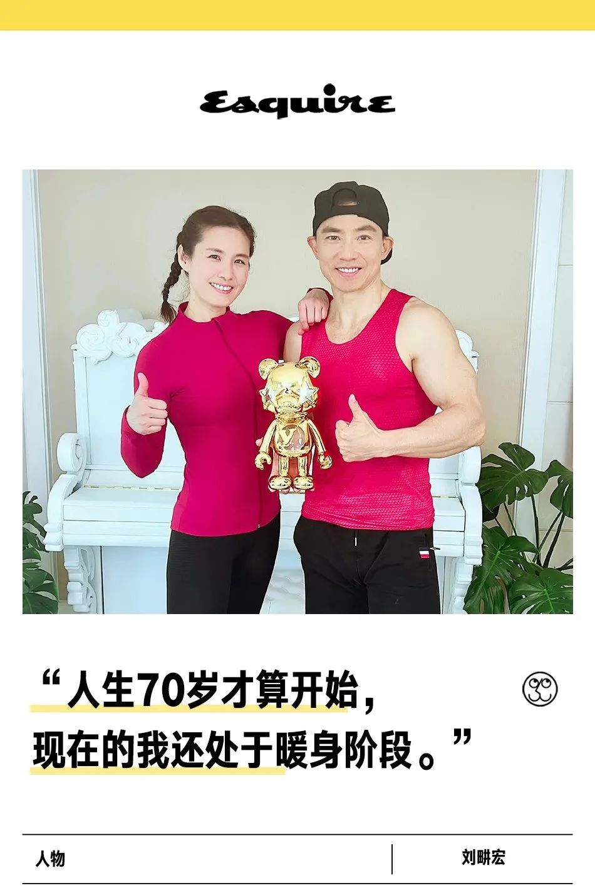

“全民健身教练”刘畊宏和他迟来的爆红
【来源】：互联网
疫情封控期间，不少朋友一边居家隔离，一边为了自个儿的身心健康，在工作学习之余开始了整活，比如有的朋友会像彭于晏和“调戏”彭于晏的网友们一样，一边利用食材做做料理，一边积极网上冲浪，通过和网友们的交流来避免独处的孤独。

而在这之中，伴随着周杰伦的《本草纲目》，“毽子操”开始火遍全网，或被学校用作学生的锻炼项目，或成为网友的挑战项目，甚至还出现了跳绳版、唱跳版、花样高阶版等等，一股全民互联网健身的风潮刮起，“毽子操”的创作者刘畊宏也走进了人们的视线。 减肥刷脂人士开始驻扎在刘畊宏的直播间，刘畊宏会拽上自己的妻子Vivi（王婉霏）一起直播带大家健身，在这里网友们不仅可以和专业人士学习锻炼方法，还能从Vivi在锻炼中露出的痛苦面具上看到正在受苦的自己，也难怪有网友调侃：刘畊宏带妻子锻炼，可谓是“新型家暴”、别人健身废自己，刘畊宏健身废老婆。 网友们格外热衷参与这种直播在你面前的明星夫妻情节，甚至主动充当起了监工，在Vivi划水的时候录屏存证给刘畊宏看，于是直播结束后Vivi喜提加练（大家真的太闲了）。 伴随着“人鱼线马甲线我都要”的口号，破圈的刘畊宏和李佳琦一起被网友戏称为“谋财害命”组合。无数“刘畊宏女孩、刘畊宏男孩”一边对着手机小小的屏幕挥洒汗水，一边高喊“刘畊宏，你是我的神”，刘畊宏在短视频平台的人气开始急剧增长。短短一个月，涨粉近五千万。 刘畊宏成为一个现象级话题，有人总结刘畊宏的走红原因：疫情期间大家居家隔离，需要运动来转移注意力；直播内容易操作，门槛低；王婉霏和刘畊宏的夫妻互动给空乏的健身直播中加入了各种情景元素，形成了反差，让网友产生代入感，内容更加轻松活泼等等。 但或许，一朝走红更大的原因还是在于这之前他努力过的无数个日日夜夜。
浏览量：33

- 联系
我们

工作日：
早9:00-晚18:00
杨老师：
400-888-8888